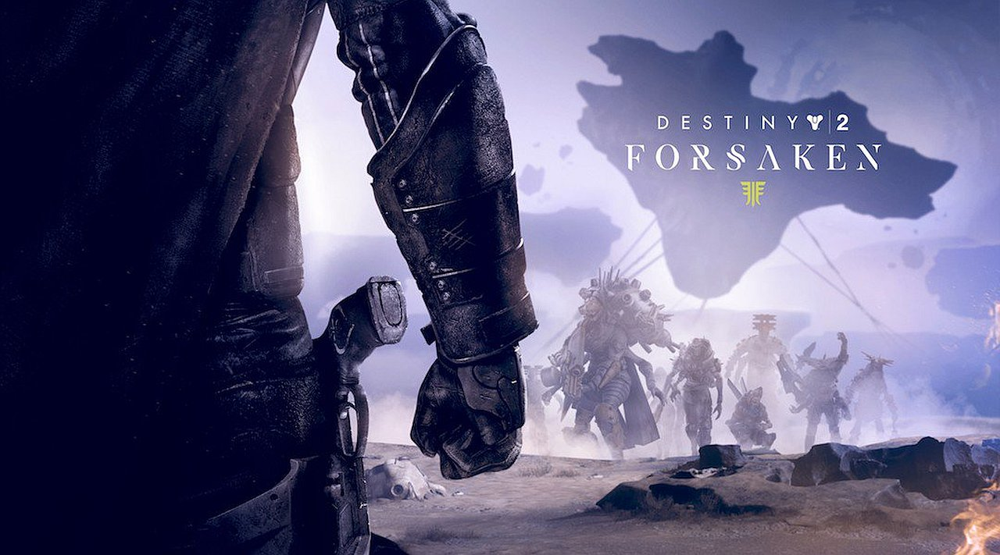

This page is about the big moments that transpired in the destiny timeline and where the game is currently.
SEPTEMBER 9, 2014- Release of Destiny
SEPTEMBER 16, 2014- Vault Of Glass Raid release
DECEMBER 9, 2014- The Dark Below Expansion Release; Crota Raid

MAY 19, 2015- House of Wolves Release; May 22, 2015 Trials of Osiris Release (Competitive Crucible 3v3 Mode Only on Weekends)
SEPTEMBER 15, 2015- End Of First Year; Release of Taken King Expansion and Oryx Raid soon after
SEPTEMBER 20, 2016- End Of Second Year; Release of Rise of Iron and Wrath of the Machine Raid
SEPTEMBER 6, 2017- Release of Destiny 2 followed by many non impactful/notable content releases
SEPTEMBER 4, 2018- Release of Forsaken Expansion (Biggest Turning Point For Destiny 2)
SEPTEMBER 14, 2018- Release of Last Wish Raid

NOW- Destiny 2 now is mostly free to play, with a new expansion on the way to follow up on a earlier content release in October which was Shadow Keep. The game is going really strong with a really big and loyal fanbase with millions of players still waiting to see whats next for the francshise.